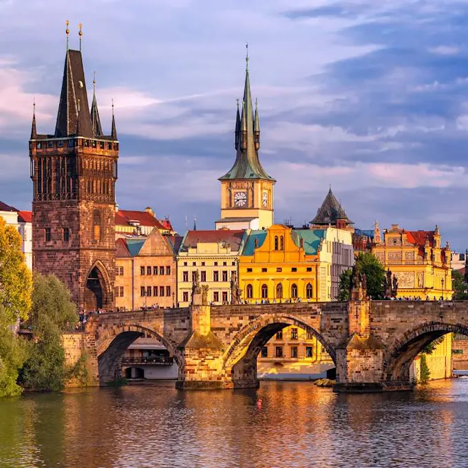

Praga (en checo: Praha, pronunciado /ˈpraɦa/ ( escuchar); en alemán: Prag, pronunciado /pʁaːk/ ( escuchar)) es la capital de la República Checa y de la región de Bohemia. Situada a orillas del río Moldava, tiene aproximadamente 1,36 millones de habitantes, lo que la convierte en la ciudad más poblada del país y la séptima de Europa Central. El área metropolitana de Praga cuenta con una población de 2,7 millones de habitantes. Su belleza y patrimonio histórico la convierten en una de las veinte ciudades más visitadas del mundo.
